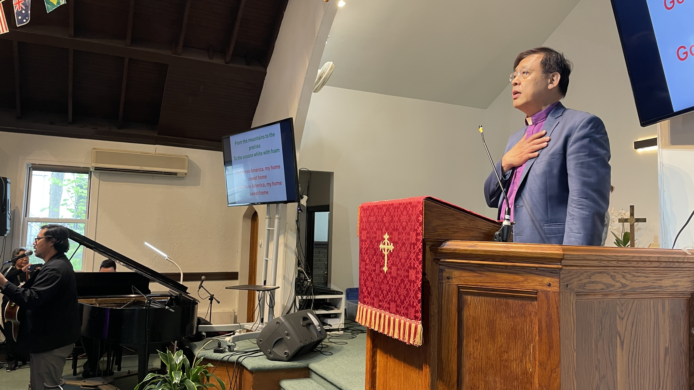

Mandarin worship
Sunday 10:00 a.m. – 12:00 p.m.
Services
Sunday worship at First Presbyterian Church Palisades Park is offered in Mandarin, English, Korean, and Spanish. The sanctuary on 50 W Palisades Blvd is a shared house of prayer. All are welcome.
Flags of the nations hang over the pews. The church keeps a simple invitation on a worn plaque: this church is open daily for prayer and meditation.

Times follow the multilingual worship pattern the church has kept since 2004. Clergy for each language hour are announced in the bulletin; this page does not invent names.
Sunday 10:00 a.m. – 12:00 p.m.
Sunday 12:00 p.m. – 2:00 p.m.
Sunday 2:00 p.m. – 4:00 p.m.
Sunday 4:00 p.m. – 6:00 p.m.

English worship was established in May 2001 for the second generation and the wider town. Mandarin worship grew from the earlier Taiwanese-Mandarin bilingual service. Korean worship began in July 2003 when Crystal Presbyterian Church was welcomed. A Hispanic congregation was received in 2004.
Come as you are. Parking and the front stair meet Palisades Boulevard. If you are visiting, write us and we will help you find the hour that fits your language.